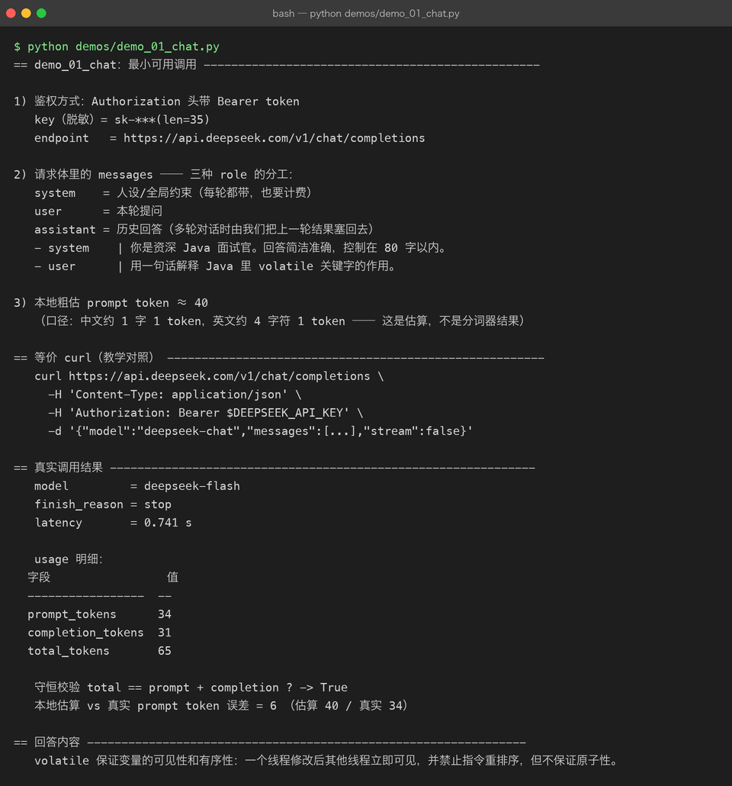
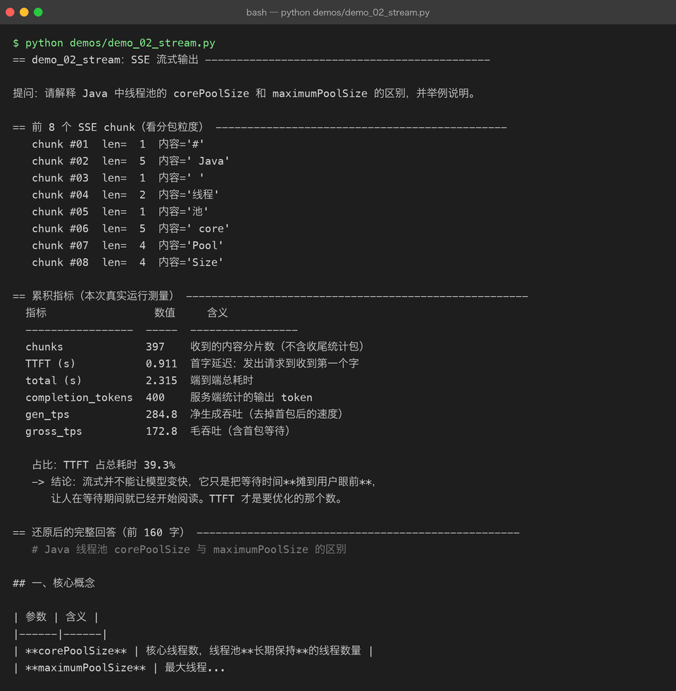
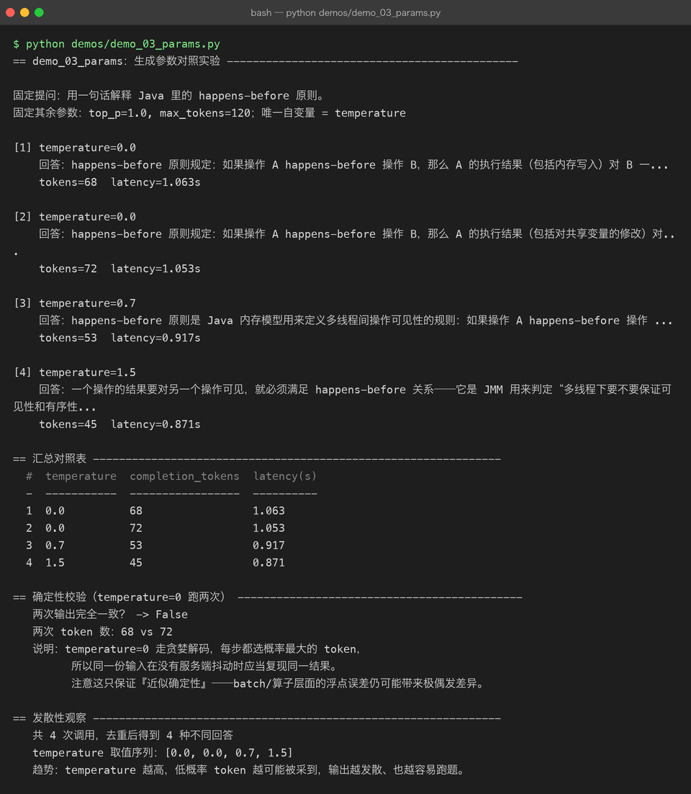
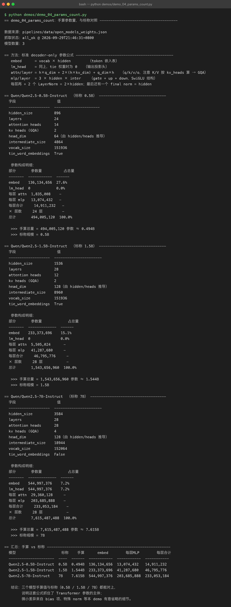
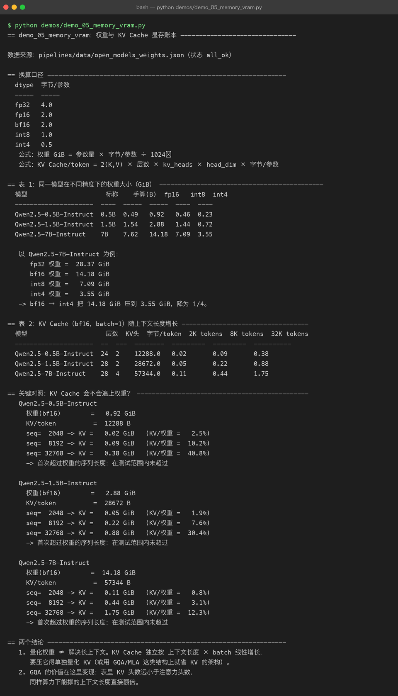
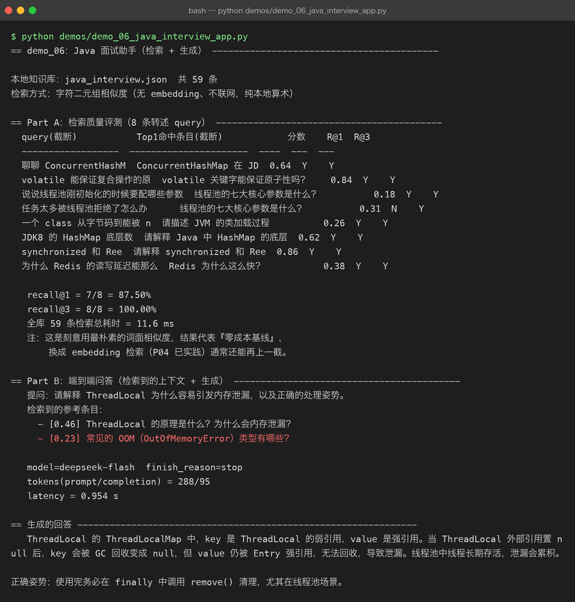

pipelines —— 本地驱动的开源 LLM 调用管线
所属：Project 07 · Open Source LLM
与
workflows/的分工：workflows/回答「模型怎么训出来」，pipelines/回答「模型怎么调起来、资源怎么算」。
为什么单开这个目录
本机是 Mac M1 / 16GB 统一内存 / 磁盘余量约 15GB。跑 Qwen2.5-7B 的 bf16 权重需要 14.18 GiB（见 M05 实测表），本机内存扛得住但磁盘会被压到危险水位；更大的模型直接不可行。
但「调用」不等于「加载」——推理在云端，本机只需要一个 HTTP 客户端。于是 P07 拆成互不干扰的两条线：
| 目录 | 回答的问题 | 是否需要 GPU |
|---|---|---|
workflows/ | 模型/数据集怎么训出来（Colab / Pro / 云端 GPU） | 是 |
pipelines/ | 怎么调用、参数怎么调、资源怎么算 | 否 |
附带好处：这条线的每个数字要么来自本次真实 API 调用，要么是本机可复现的算术， 没有从博客里抄来的二手结论（具体见文末「数据可信度分级」）。
目录契约
pipelines/
├── README.md # 本文件
├── data/
│ └── open_models_weights.json # 真实抓取的 HF config.json 字段（带着 source 与抓取状态）
├── llm_client/ # 零第三方依赖的最小客户端
│ ├── client.py # /chat/completions：非流式 + SSE 流式
│ └── baselines.py # 参数量 / 权重 / KV Cache 的本地算术
├── demos/ # 6 个 demo，全部真实跑通
│ ├── _common.py # 落盘 + 计时 + 表格脚手架
│ ├── demo_01_chat.py # M01 最小可用调用
│ ├── demo_02_stream.py # M02 SSE 流式与 TTFT
│ ├── demo_03_params.py # M03 生成参数对照
│ ├── demo_04_params_count.py # M04 手算参数量对账
│ ├── demo_05_memory_vram.py # M05 显存账本
│ ├── demo_06_java_interview_app.py # M06 Java 面试助手（检索+生成）
│ └── out/ # 每次运行的终端输出 + 结构化结果（截图的真实素材）
└── assets/ # 由 demos/out/*_terminal.txt 渲染的真实终端截图运行方式
cd projects/07-open-source-llm/pipelines
source ~/.zshrc # DEEPSEEK_API_KEY 在这里导出
python demos/demo_01_chat.py必须
source ~/.zshrc：非交互 shell 不会继承里面的导出变量， 不 source 会直接抛LLMError: 未找到 DEEPSEEK_API_KEY。这是本机环境特有的坑， 别浪费时间怀疑代码。
demo 的输出会同步写入 demos/out/<name>_terminal.txt 与 <name>_result.json—— 截图只能由这两份真实产物渲染而来，这是本项目对「配图」的硬约束。
M01 最小可用调用
demo_01_chat.py 把一次调用在 HTTP 层面摊开：Bearer 鉴权、三种 role 的分工、 以及 usage 的守恒性质（total == prompt + completion）。

本次真实测量
| 指标 | 实测值 |
|---|---|
| prompt_tokens | 34 |
| completion_tokens | 31 |
| total_tokens | 65 |
守恒校验 total == prompt + completion | True |
| latency | 0.741 s |
| 本地粗估 vs 真实 prompt token | 估算 40 / 真实 34，误差 6 |
本地估算用「中文 1 字 ≈ 1 token、英文 4 字符 ≈ 1 token」的口径，误差 6 属正常—— 它证明了估算只能是估算，真正计费要以服务端 usage 为准。
M02 流式输出：把等待摊到用户眼前
demo_02_stream.py 的核心价值是把「总耗时」拆成 TTFT（首字延迟） 和「净生成」两段。 非流式下这两个数是同一个值，用户只能干等；流式把它们分开，体感完全不同，但模型并没有变快。

| 指标 | 实测值 |
|---|---|
| SSE chunks | 397 |
| TTFT（首字延迟） | 0.9106 s |
| 端到端总耗时 | 2.3152 s |
| TTFT 占比 | 39.33% |
| 净生成吞吐 gen_tps | 284.77 tok/s |
| 毛吞吐 gross_tps | 172.8 tok/s |
两个读数值得记：
- TTFT 占了近 40% 的总时间——用户有接近四成时长在「对着空白屏等」。这才是要优化的目标。
- gen_tps 284.77 vs gross_tps 172.8，差的正是被 TTFT 拖走的那部分。 只看「每秒多少 token」会被这个口径差误导。
另一个细节：397 个 chunk 对应 400 个 completion token，几乎 1:1—— 中文流式基本是「一个 token 一个包」。
M03 生成参数对照
demo_03_params.py 固定 prompt、只改 temperature，跑 4 组 （0.0 故意跑两次，用于检验贪婪解码是否真的一致）。

| # | temperature | completion_tokens | latency(s) |
|---|---|---|---|
| 1 | 0.0 | 68 | 1.063 |
| 2 | 0.0 | 72 | 1.053 |
| 3 | 0.7 | 53 | 0.917 |
| 4 | 1.5 | 45 | 0.871 |
⚠️ 本次运行推翻了一个常见说法：
temperature = 0 走贪婪解码，同输入应产出相同输出。
实测两次结果不一致（68 vs 72 tokens，文本也有差异）。 这说明「temperature=0 ⇒ 严格确定性」是近似成立而非保证： 服务端批处理/batching、算子层面的浮点差异都会让极小概率(token分岔)放大， 尤其在长输出里。
如果你的业务依赖「同输入必须同输出」，不要把宝押在 temperature=0 上—— 正确做法是加 seed（若服务端支持）+ 自己做输出缓存。
另外，本组数据里 token 数随 temperature 升高而下降（68 → 53 → 45）， 这是这组样本的观察，不能当普遍规律——它取决于采样到停止符的时机。
M04 手算参数量：把「为什么叫 7B」算出来
demo_04_params_count.py 完全不联网，只用 Transformer 参数公式 从真 config.json 的架构字段算出参数量，再跟标称规模对账。
能算出来 = 你真的懂这个结构；只能背名字 = 之前是假的懂。

| 模型 | 手算参数量 | 手算(B) | 标称 |
|---|---|---|---|
| Qwen2.5-0.5B-Instruct | 494,005,120 | 0.494 | 0.5B |
| Qwen2.5-1.5B-Instruct | 1,543,656,960 | 1.544 | 1.5B |
| Qwen2.5-7B-Instruct | 7,615,487,488 | 7.615 | 7B |
三个都能对上，说明这套公式抓住了 Transformer 参数的主体。 残余差异来自本 demo 有意省略的 bias 项、特殊 norm 等细节。
公式（也是 P06 从零实现过的结构，如今在真实模型上对账）：
embed = vocab × hidden （tie 权重时 lm_head 为 0，否则再算一份）
attn/layer = h×q_dim + 2×(h×kv_dim) + q_dim×h （q/k/v/o；K、V 按 kv_heads 算 → GQA）
mlp/layer = 3 × hidden × intermediate （gate + up + down，SwiGLU）
每层再加 2 个 LayerNorm = 2×hidden；最后还有一个 final norm = hidden值得一提：0.5B 与 1.5B 的 tie_word_embeddings=true（lm_head 复用嵌入表，直接省下一份 vocab×hidden），7B 为 false——所以 7B 单是这两个矩阵就占了 544,997,376 × 2 ≈ 10.9 亿参数， 超过总量的 1/7。词表大小的代价在这里看得最清楚。
M05 显存账本：权重与 KV Cache
demo_05_memory_vram.py 同样纯本地算术，回答两个决策问题：要不要量化？能不能跑长上下文？

Qwen2.5-7B 权重（GiB）
| fp32 | bf16 | int8 | int4 |
|---|---|---|---|
| 28.37 | 14.18 | 7.09 | 3.55 |
bf16 → int4 正好降为 1/4。这解释了「为什么 4-bit 量化是消费级显卡跑大模型的入场券」。
KV Cache（bf16, batch=1）：7B 每 token 57,344 B，序列长度展开后：
| 2K tokens | 8K tokens | 32K tokens |
|---|---|---|
| 0.11 GiB | 0.44 GiB | 1.75 GiB |
一个诚实的负结果：本以为长上下文下 KV 会反超权重，但在 32K 测试范围内并没有—— 7B 在 32K 时 KV/权重 仅 12.3%，最高的 0.5B 也只有 40.8%。 原因是这几个模型的 max_position_embeddings 为 32768，且 GQA 把 KV 压得很小 （7B 只有 4 个 KV 头 vs 28 个注意力头）。
结论因此要修正表述：
长上下文下 KV Cache 会线性增长，但在这批 Qwen2.5 模型的官方窗口内还追不上权重。 真正让它爆掉的是 batch 数——上面全是 batch=1，乘以并发数才是线上真实水位。
另外务必记住：量化权重 ≠ 解决长上下文。KV Cache 是独立变量， 要压它得单独量化 KV 或依赖 GQA/MLA 这类架构改进。
M06 Java 面试助手：检索 + 生成
demo_06_java_interview_app.py 把前面的东西串成闭环，并且结果是可测量的： 使用上层 data/java_interview.json（59 条真实 Java 面试问答）作为知识库， 用字符二元组相似度做本地检索（无 embedding 依赖、不联网），再交给模型生成。

检索质量（8 条转述 query 构成的 mini 评测集）
| 指标 | 实测值 |
|---|---|
| 知识库条目数 | 59 |
| recall@1 | 87.50%（7/8） |
| recall@3 | 100.00%（8/8） |
| 全库检索耗时 | 11.59 ms |
评测集刻意用转述（而不是原句照抄）来提问， 否则「字符串一模一样」会给一个虚假的满分。
唯一漏检的一条：「任务太多被线程池拒绝了怎么办」Top1 命中了「线程池的七大核心参数」—— 两者共享大量词面，这正是纯词面相似度的典型短板。
端到端问答实测：prompt/completion = 288/95 tokens，latency 0.9543 s。
11.59 ms 检索 vs 954 ms 生成——耗时几乎全在生成侧。 想提速别在检索上抠，优化 prompt 长度和生成长度才是大头。
必须诚实标注的三件事
写文档时若漏掉这三条，整份材料的可信度就归零：
- 服务端返回的 model 是
deepseek-flash，不是我们请求的deepseek-chat。 客户端请求体写的是deepseek-chat，但实际由服务端决定落到哪个模型。 因此本文件所有延迟 / 吞吐 / 计费相关数字都是 deepseek-flash 的实测， 不能当作 deepseek-chat 的性能。
- temperature=0 两次调用结果不一致（详见 M03）， 「贪婪解码 = 确定性」是近似而非保证。
- recall@1 = 87.5% 是「零成本词面基线」的成绩，样本只有 8 条。 它用来作对照基准有意义，不足以单独支撑任何结论。
数据可信度分级
| 类别 | 来源 | 可复现性 |
|---|---|---|
| usage tokens / latency / TTFT / tps | 本次真实 API 调用 | 高（重跑可得同量级） |
| 参数量 / 权重 GiB / KV Cache | 本地算术 + 真实 config.json | 高（不联网可复现） |
| config.json 架构字段 | 实时抓取 HF 镜像（fetch_status: all_ok） | 高（原始数据），但以官方为准 |
| recall@1 / recall@3 | 本地 8 条评测集 | 中（样本小） |
下一步
- 增加 KServe/vLLM 本地部署对照（需要 GPU，走
workflows/那条线的技术栈） - 用 embedding 检索替换字符二元组，与 87.5% 这条基线做同口径对比
- 把 M05 的账本接上真实 GPU 显存读数，验证「估算 vs 实测」的偏差
版本
v0.1 —— 6 个模块全部真实跑通，产出 6 张真实终端截图 + 12 份运行产物。